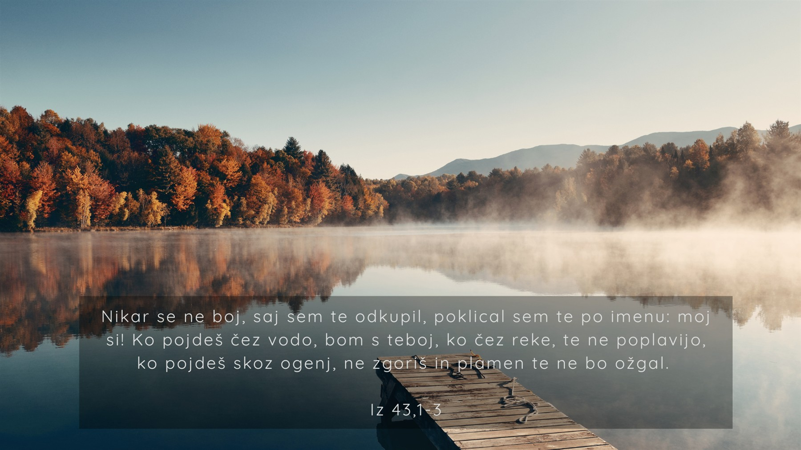

Ljubezen in spoštovanje
Drug drugega ljubimo z bratovsko ljubeznijo. Veselimo se z veselimi in smo blizu tistim, ki jočejo.
 TRDNA SKALABOŽJA BESEDA, SLAVLJENJE, MOLITEV
TRDNA SKALABOŽJA BESEDA, SLAVLJENJE, MOLITEVBESEDA, NA KATERI GRADIMO · JER 33,3
Skupaj odkrivamo Božjo besedo, rastemo v veri in se povezujemo v skupnost.
Spoznaj naša srečanja ↗Naša zgodba ↓Smo Trdna Skala. Skupnost ljudi, ki nas povezuje želja po spoznavanju Boga in njegove besede.
Temelj našega povezovanja so mesečna srečanja s proučevanjem Svetega pisma. Prostor namenjamo tudi molitvi in glasbenemu slavljenju.
Naša ustanovitvena svetopisemska misel je Jer 33,3 — povabilo, da Boga kličemo in mu prisluhnemo.
Spoznaj, kako se srečujemo ↗Naše poslanstvo črpamo iz Pavlovega pisma Rimljanom: ljubiti brez hinavščine, vztrajati v molitvi in premagovati hudo z dobrim.
Drug drugega ljubimo z bratovsko ljubeznijo. Veselimo se z veselimi in smo blizu tistim, ki jočejo.
V upanju se veselimo, v stiski vztrajamo. Pomagamo ljudem v potrebi in odpiramo prostor za druge.
Kolikor je odvisno od nas, živimo v miru z vsemi. Na hudo odgovarjamo z dobrim.
Pismo Rimljanom 12,9–21
Ustavimo se, odpremo Sveto pismo in skupaj iščemo, kaj nam Božja beseda govori v vsakdanjem življenju.

MESEČNA SREČANJA
Podrobnosti naslednjega srečanja še pripravljamo. Spremljajte obvestila na tej strani.
Vprašaj nas o srečanjih ↗Od moške skupine do tradicionalnega otvoritvenega vikenda v Crikvenici. Tukaj najdeš prihajajoče dogodke in arhiv videonapovednikov.
»Kliči me in ti bom odgovoril;Jeremija 33,3 · Slovenski standardni prevod ↗
povedal ti bom velike in nedoumljive reči,
ki jih nisi poznal.«
Svetopisemske misli za trenutek zbranosti, spodbudo in molitev med našimi srečanji.
Izberi fotografijo za večji prikaz ↗
Izbor glasbe iz arhiva Trdne Skale. Pesmi in instrumentalne meditacije za čas slavljenja in zbranosti.
Želiš izvedeti več o skupnosti ali naslednjem srečanju? Pokliči nas ali nam piši. Veseli bomo tvojega sporočila.
SKUPNOST TRDNA SKALA
Vabljeni, da nas spoznate na enem od mesečnih srečanj.
Več o srečanjih ↗